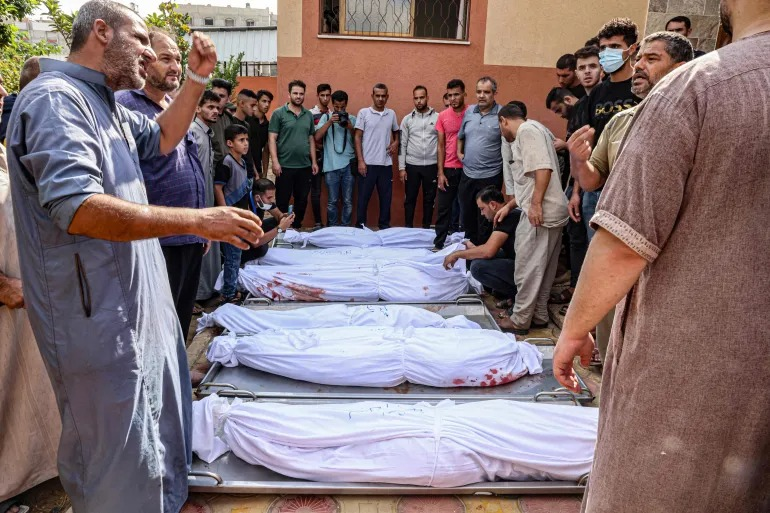
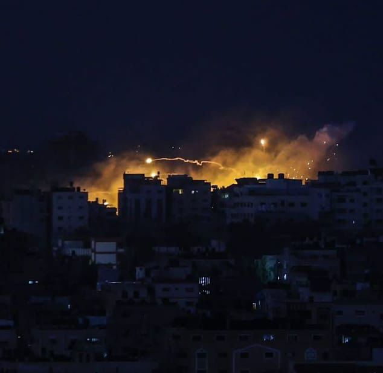
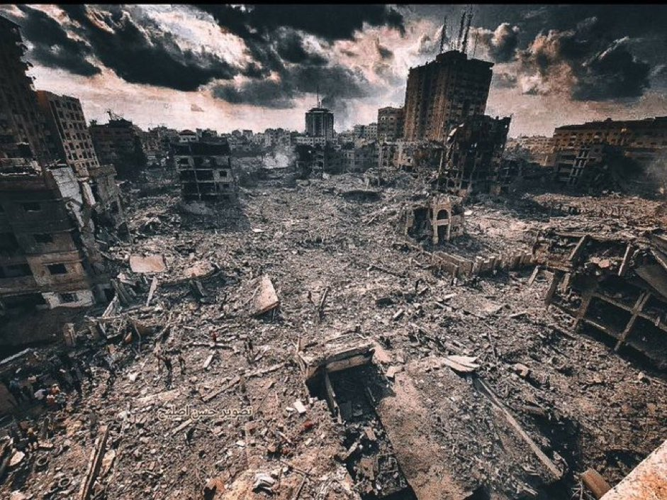
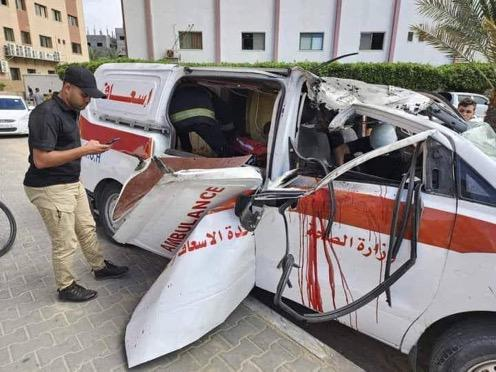
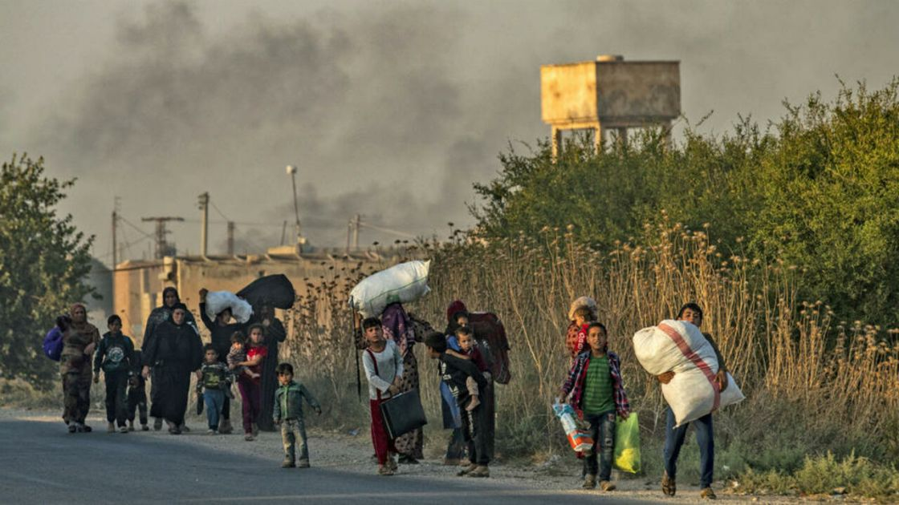
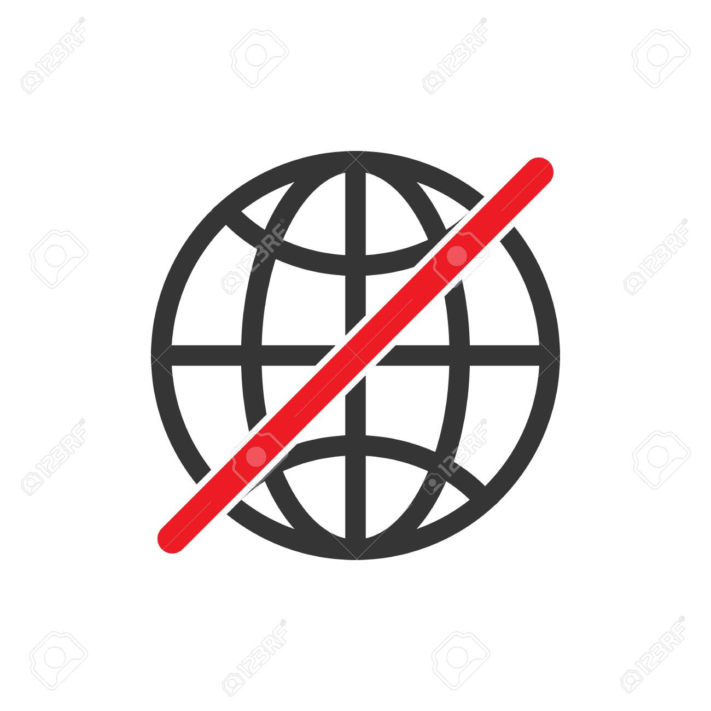
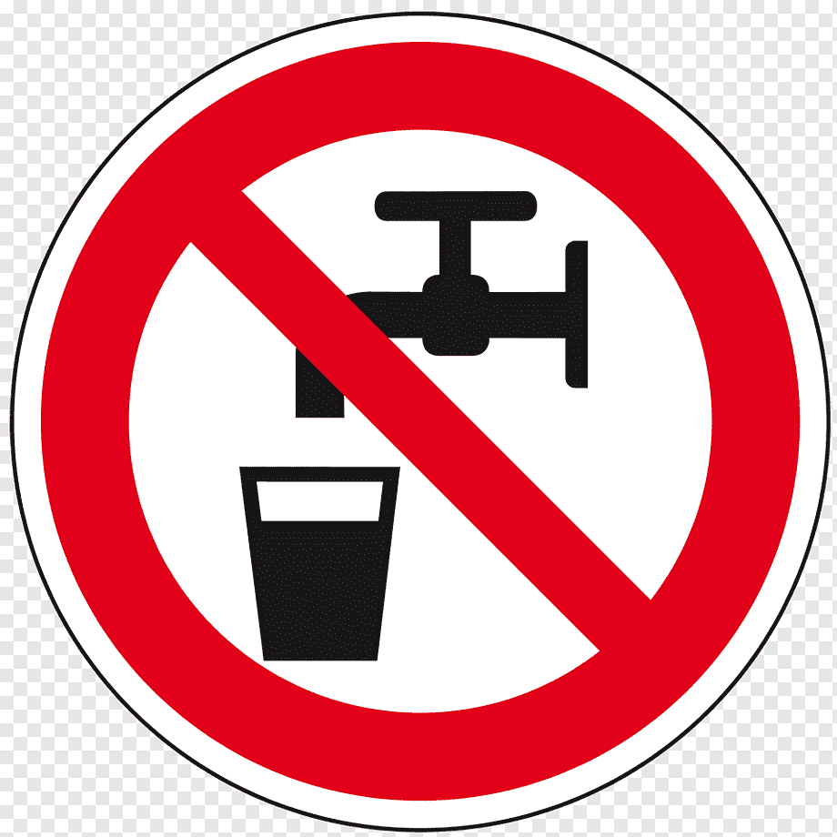

The people of Gaza are being exterminated.
A large part of the population of the besieged Gaza Strip is subjected to genocide, as thousands have
been martyred and injured by the continuous Israeli bombing since the Palestinian resistance launched
Operation Al-Aqsa Flood. What is happening is that a large part of the Palestinian population in Gaza is
being eliminated, not differently than before but with increasing ferocity. Commenting on the decision
of the Zionist entity to cut off the supply of water, electricity, food, and other basic facilities from
Gaza, UN rapporteur Francesca Albanese explained that starving the besieged population in Gaza and
depriving them of essentials is a war crime and a crime against humanity. Meanwhile, the United Nations
has announced that more than 423,000 Palestinians have been displaced from their homes in the Gaza Strip
by heavy Israeli shelling that has been ongoing for nearly a week. The United Nations Relief and Works
Agency for Palestine Refugees (UNJWA) said earlier that tens of thousands had taken refuge in its
schools in the Gaza Strip to escape the shelling of the Israeli occupation.
SOURCE

Israel is breaking international law.
Israel targeted the western port area of Gaza on Wednesday with several white phosphorus bombs, resulting
in hundreds of cases of suffocation, Palestinian medical sources said. The sources confirmed the attack
led to hundreds of Palestinians suffering from suffocation, with a significant number of them being
transported to hospitals while others received on-site medical treatment. Most of the injuries were
observed among children and the elderly, particularly those with pre-existing respiratory conditions,
according to the sources. An extensive area in western Gaza was reportedly covered with white
phosphorus, as per Anadolu's correspondent. White phosphorus bombs are internationally prohibited under
the 1980 Geneva Convention, which explicitly forbids their use as incendiary weapons against both humans
and the environment
SOURCE

All of Gaza was bombed.
The occupation has bombed all areas of Gaza. It has bombed the Rimal neighbourhood, which is considered
the largest economic area in Gaza. Jabaliya Camp, which is one of the largest camps in the world, was
also bombed. The area of dignity was completely bombed. The occupation deliberately bombed major
residential towers, such as the Palestine Tower, which contains 15 floors.
SOURCE

That's why Hamas was attacked.
Saleh Al-Arouri, deputy head of the political bureau of the Islamic Resistance Movement (Hamas), stressed
that the Al-Aqsa Flood operation, which was started by the Izz al-Din al-Qassam Brigades, the military
wing of Hamas, came in anticipation of an attack that Israel intended to launch on the Gaza Strip
immediately after the Jewish holidays, and said that the defence plan for the operation is stronger than
the offensive plan that surprised Israel and surprised the world. And also in response to Israel's
acquisition against Al-Aqsa Mosque.
SOURCE

Israel-Gaza War Daily Updates
At least 447 children and 248 women are among the 1,417 killed in Israeli strikes in the Gaza Strip, the
Palestinian Health Ministry said today. The ministry also said that 6,268 people have been injured since
Saturday. Earlier today, Israeli Prime Minister Benjamin Netanyahu vowed to "crush" Hamas and urged the
world to treat them the same way as the Islamic State group. "Just as ISIS was crushed, so too will
Hamas be crushed. And Hamas should be treated exactly the way ISIS was treated," he said as he met
visiting US Secretary of State Antony Blinken. Over 3,600 people have so far been killed in Israel and
Gaza after the sudden Hamas strikes triggered a catastrophic war in the region. Israel has also
announced a complete siege of Gaza, effectively blocking electricity, food, and water supply. The United
Nations said that more than 3 lakh people have been forced to flee their homes in the Gaza Strip as
heavy Israeli bombardments continue to hit the Palestinian enclave.
SOURCE

Forced Migration
Israeli occupation forces asked the residents of Gaza City to move to the south, then proceeded to bomb
them! They’ve sent them letters previously today through aeroplanes (literally, aeroplanes flew above
them, throwing papers with a warning that says, For your and your family’s safety, head to the south
within 24 hours.
SOURCE

NO INTERNET!
The Israeli Minister of Communications, Shlomo Karai, takes a decision to stop providing Internet
services to Internet companies in the Gaza Strip, starting at 00:00 on 10/14/2023, and to ban all types
of services provided by Israeli Internet service providers to Gaza.
SOURCE

No more water and electricity.
The Israeli occupation forces cut off the water, electricity, energy sources, and internet from Gaza for
a few hours, and Gaza will be isolated from the world. Hospitals will turn into mass graves.
SOURCE